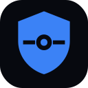

Almanax
Almanax
AI security engineer that finds vulnerabilities in applications and smart contracts and reviews pull requests; acquired by depthfirst (June 2026).
Updated
✨ Try AgentScout's free AI image generator →Good for: reviewing pull requests, evaluating agents, agent security and safety, security testing, smart contract security
Use cases
About Almanax
Almanax is listed in our security & governance category and is aimed at people who want a ready-to-use product. AI security engineer that finds vulnerabilities in applications and smart contracts and reviews pull requests; acquired by depthfirst (June 2026). Pricing, as the maker states it: 7-day free trial; paid plans. Maturity: Active. We last checked the official link on 2026-10-18.
What is Almanax?
Almanax is an AI security engineer for application security. It connects to your GitHub repositories, scans for vulnerabilities and reviews every pull request so it can block risky code before merging. It has specialized models for blockchain ecosystems such as EVM, Solana, Stellar and Aptos, and it also supports most programming languages.
Its features include automated threat modeling, custom detection rules written in plain English, agents that learn from dismissed findings, reachability triage of third-party alerts and automatic patch suggestions. In June 2026, Almanax announced that it was joining the product-security company depthfirst, which acquired it. The Almanax site is still live and offers a 7-day free trial.
Sources: almanax.ai, almanax.ai/blog/almanax-is-joining-depthfirst, depthfirst.com/post/almanax-is-joining-depthfirst and our directory listing, checked 2026-10-18.
Who is Almanax for?
Security and engineering teams, especially at blockchain and smart-contract companies, that want continuous AI code scanning and PR review instead of only periodic audits.
Key features
- GitHub app for repo scans and PR security reviews
- Ecosystem-specialized models (EVM, Solana, Stellar, Aptos)
- Automated threat modeling and custom natural-language rules
- Third-party alert triage with reachability analysis
- Auto-patch suggestions
- Acquired by depthfirst (announced June 2026)
Almanax FAQ
What is Almanax?
Almanax is an AI security engineer for application security. It connects to your GitHub repositories, scans for vulnerabilities and reviews every pull request so it can block risky code before merging. It has specialized models for blockchain ecosystems such as EVM, Solana, Stellar and Aptos, and it also supports most programming languages.
Who is Almanax for?
Security and engineering teams, especially at blockchain and smart-contract companies, that want continuous AI code scanning and PR review instead of only periodic audits.
Is Almanax free?
Almanax's pricing, as the maker states it: 7-day free trial; paid plans. Check the official site for current plans.
Is Almanax still independent?
No. In June 2026 Almanax announced that it was joining depthfirst, which acquired the company. The Almanax site is still live and offers a 7-day free trial.
What are alternatives to Almanax?
Similar tools include open-kritt, Octane, Mantis, Aletheore, ADR and Agent Control.
Almanax ratings and reviews
Be the first to rate Almanax: tap 1 to 5 stars below. A written review is optional.
Almanax alternatives
Other security & governance tools in our directory. See all security & governance tools →
open-kritt
A self-hosted AI security research tool that orchestrates agents to hunt for vulnerabilities in a codebase and then validate and rank what they find; managed scans are also offered.
Octane
Agentic security analysis that finds exploitable vulnerabilities in mission-critical code, including DeFi smart contracts.
Mantis
Google's toolkit for AI coding agents to autonomously find, reproduce and patch software vulnerabilities in isolated environments.
Aletheore
Aletheore audits code repositories and backs every finding with evidence. Its deterministic scanner looks for leaked secrets, vulnerable dependencies and dead code, it can watch live endpoints and draw architecture maps, and it reviews pull requests automatically through a GitHub Action. A built-in MCP server lets coding agents run the same audits.
ADR
Uber's Agentic AI Detection and Response system that secures employee and customer-facing AI agents with observability and threat detection.

Agent Control
Agent Control's Action Gate is a Claude Code hook that makes the agent ask before a Slack post, a CRM edit or a deploy; a no, or no answer in 10 minutes, stops the tool call. Connect adds ask-before-paying controls for agent payments. Action Gate is $49 for 30 days, paid in USDC on Base, Solana or Ethereum.
Get your badge
Built Almanax? Optional. Showing this badge does not change your rank or earn a Featured spot. It links to this page. About badges